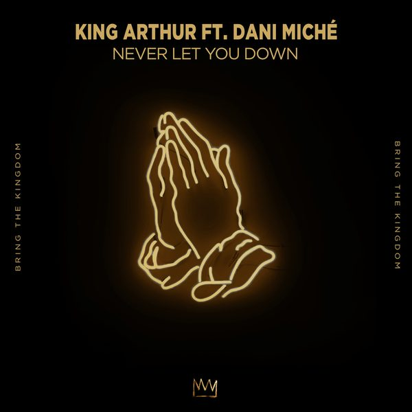
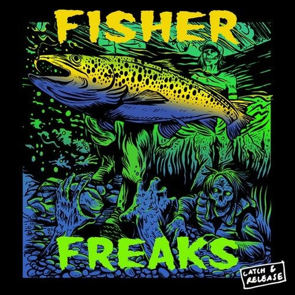
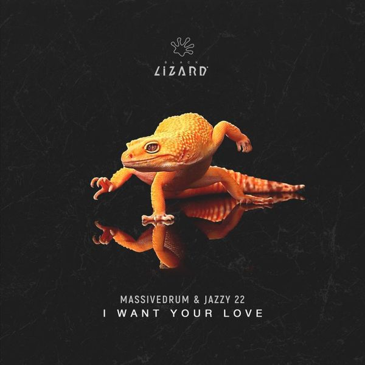

I 25 dischi
 1
Pump that funkyMurd & Ard
1
Pump that funkyMurd & Ard
 2
That BodyMilk & Sugar, Mattei & Omich
2
That BodyMilk & Sugar, Mattei & Omich
 3
Thrill Me (Milk Bar & Giuseppe Parisi Remix)Donati & Amato vs ATFC
3
Thrill Me (Milk Bar & Giuseppe Parisi Remix)Donati & Amato vs ATFC
 4
Afterglow (Kryder Extended Mix)Grum feat. Natalie Shay
4
Afterglow (Kryder Extended Mix)Grum feat. Natalie Shay
 5
Rabbit Hole (Solardo Remix)CamelPhat, Jem Cooke & Solardo
5
Rabbit Hole (Solardo Remix)CamelPhat, Jem Cooke & Solardo
 6
New FlavourMain Circus
6
New FlavourMain Circus
 7
Kickin' Hard (Tom Staar Extended Remix)Klubbheads
7
Kickin' Hard (Tom Staar Extended Remix)Klubbheads
 8
All On MeArmin van Buuren & Brennan Heart feat. Andreas Moe
8
All On MeArmin van Buuren & Brennan Heart feat. Andreas Moe
 9
BAM BAMMerk & Kremont, HÄWK
9
BAM BAMMerk & Kremont, HÄWK
 10
Physical (Alok Extended Remix)Dua Lipa
10
Physical (Alok Extended Remix)Dua Lipa
 11
Come TogetherFranky Wah
11
Come TogetherFranky Wah
 12
MiracleSiks
12
MiracleSiks

13 Never Let You DownKing Arthur ft. Dani Miché 14
AfterlifeReverse
14
AfterlifeReverse
 15
No LieMichael Calfan & Martin Solveig
15
No LieMichael Calfan & Martin Solveig
 16
Give Me That BassCASSIMM
16
Give Me That BassCASSIMM
 17
Tu Tambor (feat. Totó La Momposina)Cato Anaya & RSAM
17
Tu Tambor (feat. Totó La Momposina)Cato Anaya & RSAM
 18
Stranger ThingsBougenvilla
18
Stranger ThingsBougenvilla

19 Wanna Go Dancin'FISHER (OZ) 20
Bando (Valeesse Edit)Anna
20
Bando (Valeesse Edit)Anna
 21
Just Get Up And DanceHyslop, Kevin McKay
21
Just Get Up And DanceHyslop, Kevin McKay
 22
Baby (Mark Knight Extended Rework)Larry Cadge, Andrea Giudice
22
Baby (Mark Knight Extended Rework)Larry Cadge, Andrea Giudice

23 I Want Your LoveMassivedrum, Jazzy 22 24
Haus StylePiero Pirupa
24
Haus StylePiero Pirupa
 25
For a FeelingRhodes, CamelPhat, ARTBAT
25
For a FeelingRhodes, CamelPhat, ARTBAT
La tracklist
- 1 Pump that funky Murd & Ard witch bottle
- 2 That Body Milk & Sugar, Mattei & Omich Milk & Sugar Recordings
- 3 Thrill Me (Milk Bar & Giuseppe Parisi Remix) Donati & Amato vs ATFC Total Freedom Recordings
- 4 Afterglow (Kryder Extended Mix) Grum feat. Natalie Shay Anjunabeats
- 5 Rabbit Hole (Solardo Remix) CamelPhat, Jem Cooke & Solardo RCA Records
- 6 New Flavour Main Circus Armada Music
- 7 Kickin' Hard (Tom Staar Extended Remix) Klubbheads Armada Music
- 8 All On Me Armin van Buuren & Brennan Heart feat. Andreas Moe Armada Music
- 9 BAM BAM Merk & Kremont, HÄWK Spinnin' Records
- 10 Physical (Alok Extended Remix) Dua Lipa Warner Records
- 11 Come Together Franky Wah Ministry of Sound Recordings x SHEN
- 12 Miracle Siks Hexagon
- 13 Never Let You Down King Arthur ft. Dani Miché BRING THE KINGDOM
- 14 Afterlife Reverse Something Good
- 15 No Lie Michael Calfan & Martin Solveig Spinnin' Records
- 16 Give Me That Bass CASSIMM Spinnin' Records
- 17 Tu Tambor (feat. Totó La Momposina) Cato Anaya & RSAM Spinnin' Records
- 18 Stranger Things Bougenvilla Spinnin' Records
- 19 Wanna Go Dancin' FISHER (OZ) Catch & ReleaseAstralwerks
- 20 Bando (Valeesse Edit) Anna APG Inc – FF10
- 21 Just Get Up And Dance Hyslop, Kevin McKay Glasgow Underground
- 22 Baby (Mark Knight Extended Rework) Larry Cadge, Andrea Giudice Toolroom Records
- 23 I Want Your Love Massivedrum, Jazzy 22 Black Lizard Records
- 24 Haus Style Piero Pirupa NONSTOP
- 25 For a Feeling Rhodes, CamelPhat, ARTBAT RCA Records